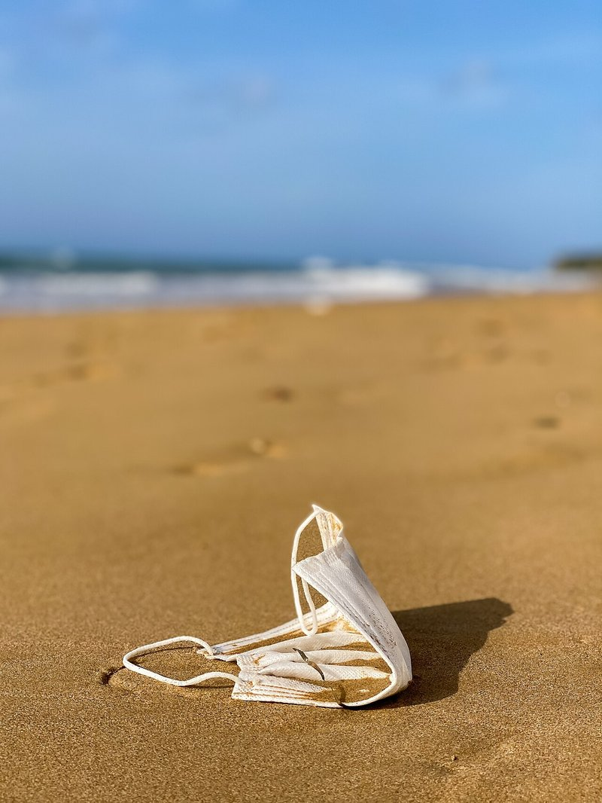

04
Chapter 04 / Personal Care & Hazards
個人衛生與危險
菸蒂、口罩、牙刷、針筒、破玻璃——有的只是垃圾，有的會見血。淨灘時最值得放慢腳步的一類。
ICC 18, 19, 20 + 危險海廢這類分兩種：一種是個人用過丟掉的東西（菸蒂、牙刷、口罩），另一種是直接危險物 （針筒、破玻璃、魚鉤）。下次淨灘的鐵則只有一句：看到尖的、利的、可能扎人的， 絕對不徒手撿，立刻叫老師。
考考你
菸頭的濾嘴是什麼做的？
答案：塑膠。「醋酸纖維塑膠」（cellulose acetate），不是棉花。
所以菸頭丟到地上、海邊，不會像紙一樣分解，要 10 年。
而且一支菸頭含7000 種有毒物質，可以污染 100 公升海水。
它們長什麼樣
圖片載入中…
菸蒂——全球海廢第一名
你可能以為塑膠瓶最多。其實全球每年最多人撿到的，是菸蒂。
4.5兆
全球每年丟棄的菸蒂支數
7000種
一支菸頭含有的有毒化學物質
100L
一支菸蒂可污染的海水量
😱
菸蒂的濾嘴是塑膠（醋酸纖維），不是棉花。要 10 年才會分解。
口罩——疫情後的新海廢
2020 年 COVID-19 之後，醫療口罩變成全球新類型海廢。 ICC 標準在 2022 年特別新增第 20 項就是為了記錄它。
口罩耳掛上的鳥
一張在 Instagram 上瘋傳的照片——一隻海鳥的腳被口罩耳掛纏住，飛不起來。 口罩看起來軟軟的，但耳掛鬆緊帶非常結實，會纏住小型動物的腳和嘴。
建議：丟口罩前剪斷耳掛，再丟進垃圾桶。
⚠️ 危險海廢——絕對不要徒手撿
下次淨灘，看到下面這些，立刻舉手叫老師。 我們會穿厚手套，但這幾樣連手套都不夠安全：
- ⚠️針筒、針頭——可能感染 B 肝、C 肝、HIV
- ⚠️破玻璃——切到會見血
- ⚠️魚鉤、釣餌鉤——勾到非常難拔
- ⚠️不明罐子或液體——可能是工業化學品
- ⚠️金屬利器（鐵釘、生鏽鐵片）
🆘
叫老師不是膽小，是負責。專業裝備（鋏子、鋼桶）才能安全處理。
它們在海裡多久？
分解時間（年）
菸蒂濾嘴10
口罩450
塑膠牙刷500
針筒（塑膠）450+
你能怎麼做？
- ✓看到大人在海邊抽菸——可以禮貌請他們把菸頭帶走，不要捻到沙裡。
- ✓丟口罩前剪斷耳掛，避免動物被纏住。
- ✓用竹牙刷代替塑膠牙刷（家長同意的話）。
- ✓淨灘看到危險物，叫老師。永遠不徒手碰。